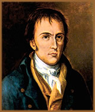
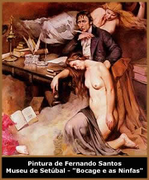

Em
15 de setembro de 1765, nasce Manuel Maria Barbosa du Bocage,
em Setúbal, Portugal. Era filho do bacharel José
Luís Soares de Barbosa, antigo juiz de fora, ouvidor, e
depois advogado, e de D. Mariana Joaquina Xavier Lestof du Bocage,
segunda sobrinha da célebre poetisa francesa, madame Marie
Anne Le Page du Bocage, autora da tragédia As Amazonas
e do poema épico em dez cantos A Columbiada.
Ainda novo, começou os estudos entrando
na aula régia de gramática do padre espanhol D.
João de Medina, e ali aprendeu a língua latina.
No ano de 1779 assentou praça de cadete no regimento nº
7 de infantaria de Setúbal, indo estudar em Lisboa aos
14 anos de idade. Na "Academia Real de Marinha", Bocage
recebeu a sua educação científica. Aos 18
anos, alistou-se na Marinha, tendo feito o seu tirocínio
em Lisboa e embarcando em 1786 para Goa, Índia, na condição
de oficial. Na sua rota para a Índia, à bordo da
nau "Nossa Senhora da Vida, Santo Antônio e Madalena",
passou pelo Rio de Janeiro, onde se encontrava o futuro Governador
de Goa. Nesta cidade, teve oportunidade de conhecer e de impressionar
a sociedade da época.
Em outubro de 1786, chegou finalmente à
Índia. A sua estadia neste território caracterizou-se
por uma profunda dificuldade de adaptação. Com efeito,
o clima insalubre, a vaidade e a estreiteza cultural que observou,
conduziram a um descontentamento que retratou em alguns sonetos
de caráter satírico.
Regressou a Portugal em gosto de 1790. Na capital,
vivenciou a boêmia lisboeta, freqüentou os cafés
que alimentavam as idéias da revolução francesa,
satirizou a sociedade estagnada portuguesa, desbaratou, por vezes,
o seu imenso talento. A sua peculiar experiência de vida,
a irreverência, a extroversão, a emotividade, a frontalidade,
a ironia, a percepção aguda da realidade e o imenso
talento que o caracterizavam, de imediato, garantiram uma legião
de admiradores incondicionais. Em 1791, publicou o seu 1º
tomo das Rimas. No início da década de noventa,
aderiu à "Nova Arcádia", uma associação
literária, controlada por Pina Manique, que metodicamente
fez implodir. Efetivamente, os seus conflitos com os poetas que
a constituíam tornaram-se freqüentes, sendo visíveis
em inúmeros poemas cáusticos.
Nesta
fase da sua vida, Bocage, além da poesia lírica,
compôs poemas de caráter satírico contemplando
pessoas do regime, tipos sociais e o clero, fato que não
agradou obviamente ao poder. Então em 1797, acusado de
heresia, dissolução dos costumes e idéias
republicanas, foi implacavelmente perseguido, julgado e condenado,
sendo sucessivamente encarcerado em várias prisões
portu- guesas. Ali realizou traduções de grandes
nomes como Rousseau e Voltaire, o que o ajudou a sobreviver ao
sair, posteriormente, do cárcere. Ao recuperar a liberdade,
graças à influência de amigos, e com a promessa
de criar juízo, o poeta, envelhecido, tem uma passagem
pelo "Convento dos Oratorianos", em 1798, onde é
doutrinado, abandonando a boêmia e impondo aos seus contempo-
râneos uma nova imagem: a de homem arrependido e digno.
Ainda teve uma pequena reclusão quando fora mandado pelo
Santo Ofício, para o "Hospício das Necessidades"
onde teve sua vigilância apertada. Felizmente, pouco durou
essa reclusão, prevalecendo seu carisma e talento.
Em 1799, Bocage publicou o 2º tomo das
Rimas. Os anos seguintes, que precederam a sua morte, foram
bem dolorosos para o infeliz poeta, agitados de terrores e ansiedades,
vendo-se pobre e doente. Em 1804, ainda publica o 3º
tomo das Rimas e no ano seguinte, pouco antes de sua morte,
publica Os improvisos e os Novos improvisos. Nesses últimos
anos, o poeta vive com sua irmã e uma sobrinha, sustentando-as
com traduções de livros didáticos. Para sobreviver,
inclusive, teve de valer-se de um amigo (José Pedro da
Silva) que vendia, nas ruas de Lisboa, suas derradeiras composições.
Ao redor de uma atmosfera de melancolia e privações,
que se tornou sua vida após a liberdade, em 21 de dezembro
de 1805 falece Bocage, vítima de um aneurisma, aos 40 anos.
Bocage foi vítima de sua própria
fama e dos preconceitos que despertou, passando a vida sendo perseguido
pela censura de um país de aristocracia decadente, aliada
a um clero corrupto. Muitos versos foram cortados, outros ostensivamente
alterados. Em um de seus versos, o poeta mostra seu anseio desesperado:
"Liberdade, onde estás?
Quem te demora?".
Em meio a versos coloquiais, Bocage mostra seu
individualismo, seu conflito entre o amor físico e a morte,
sua morbidez e atração pelo horror. Evitando as
imagens estereotipadas dos arcádicos e o rebuscamento dos
barrocos, consegue formalizar suas vivências numa linguagem
concisa e equilibrada, logrando um estilo bem pessoal que o torna
verdadeiramente um "clássico" da língua
portuguesa. Esse caráter subjetivo da poesia de Bocage,
que faz do próprio "eu" o centro do universo
poético, torna-o um precursor das tendências românticas,
que - embora já contagiassem o resto da Europa - mal se
esboçavam no seu tempo em Portugal.
Como satírico, expôs as mazelas de
seu tempo em uma linguagem quase sempre pesada. Os seus alvos
preferidos eram os poderosos, mas também não poupou
seus colegas de Academia. Mas sua produção satírica
foi marcada principalmente, pela temática sexual.
Diante disso tudo, Bocage se
tornou um dos poetas mais importantes do século XVIII e,
apesar de ter deixado fama de grande satírico e improvisador,
sua obra o coloca como um dos melhores sonetistas líricos
de toda a literatura portuguesa.
Por Spectrum
Obras
Disponíveis:
Poemas (Download)